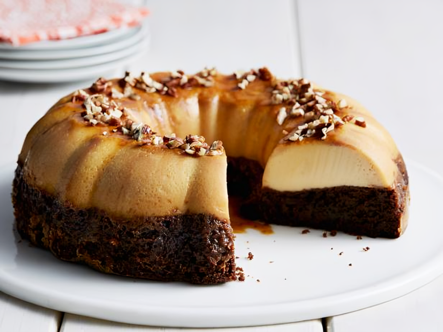
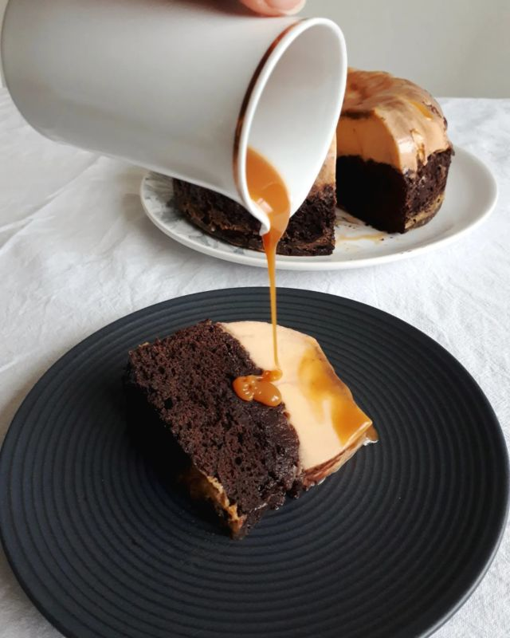
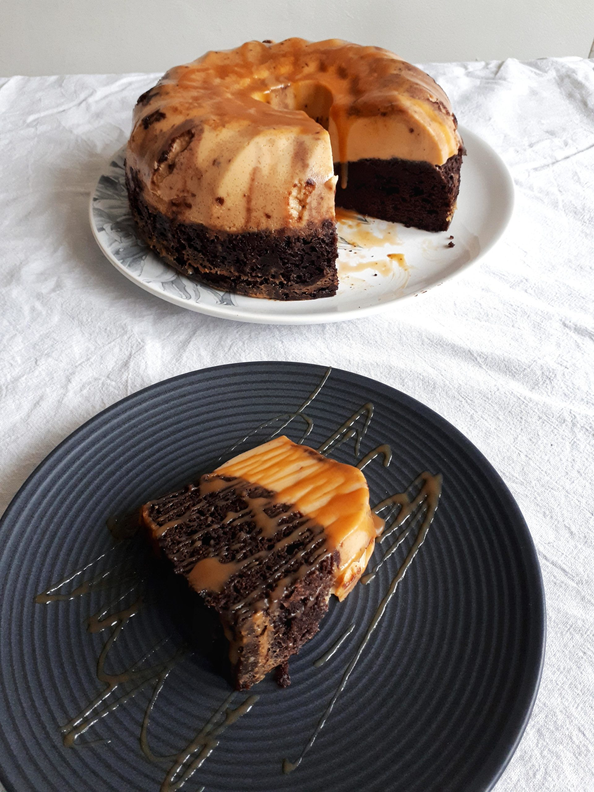

Chocoflan
Para el pastel de chocolate
- 125 gr de chocolate para fundir
- 80 gr de mantequilla a temperatura ambiente
- 3 huevos grandes
- 125 gr de azúcar blanca
- 80 gr de harina de trigo 0000
- 2 cucharadas de cacao puro en polvo
- 1 pizca de sal
Para el flan
- 1 1/4 de taza de leche
- 4 huevos grandes
- 1/2 taza de azúcar blanca
Para el caramelo
- 1/3 de taza de azúcar blanca
- 3 cucharadas de agua
Preparación
Elección del molde: Se recomienda usar uno de loza o metal, evitar los de silicona que pueden dificultar el desmolde. En el caso de esta receta se utiliza una flanera de 16 cm de diámetro por 10 cm de alto.
El caramelo
- Prender el horno a precalentar a 190 grados (calor arriba y abajo).
- Poner un cazo pequeño a fuego bajo para hacer el caramelo. Calentar el azúcar blanca y añadir agua solo para mojarla un poco. Es muy importante no remover con cuchara ya que esto hará que la mezcla incorpore aire y se cristalice. Cuando esté dorado retirar del fuego.
- Enmantecar el molde o rociar con spray desmoldante y verter el caramelo en el molde intentando cubrir la mayor superficie posible. Reservar a un costado.
Pastel de chocolate
- Trocear el chocolate y colocarlo en un bol junto con mantequilla derretida. Mezclar estos ingredientes hasta lograr una crema uniforme. Reservar.
- En otro bol mediano poner los 3 huevos, el azúcar blanca y batir hasta blanquear.
- Incorporarlo a la mezcla anterior de chocolate y mantequilla. Volver a batir.
- Mezclar la harina, la pizca de sal y el cacao en polvo con movimientos envolventes. Hacerlo hasta integrar todos los ingredientes.
- Volcar la mezcla en el molde asegurando que quede parejo y bien distribuido. La mezcla brownie deberá quedar en su punto justo, ya que si queda muy líquida se puede malograr la receta.
Flan y horneado
- Poner los huevos en un bol e incorporar el azúcar blanca y batir hasta integrar pero sin llegar a punto letra. Solo es necesario que blanquee un poco.
- Incorporar la leche y batir nuevamente hasta lograr una mezcla homogénea.
- Verter en el molde asegurándose que caiga la mezcla suavemente. Este dato es fundamental para que no se integre con la mezcla anterior. En caso de pasar esto no va a modificar en gran medida el sabor pero estéticamente se perderá el detalle característico de la receta.
- Cubrir el molde con papel de aluminio y llevar al horno dentro de una bandeja con agua caliente y cocinar a baño María
- Hornear durante 1 hora a 180 o 190 grados. Se puede ir comprobando el estado de cocción con un palillo apto para esto.
- Pasado el tiempo, retirar del fuego y dejar enfriar a temperatura ambiente. Luego llevar a la heladera durante 3 horas, aprox.
- Para desmoldar colocar un plato sobre el molde y darlo vuelta con mucho cuidado. ¡Listo para servir!

